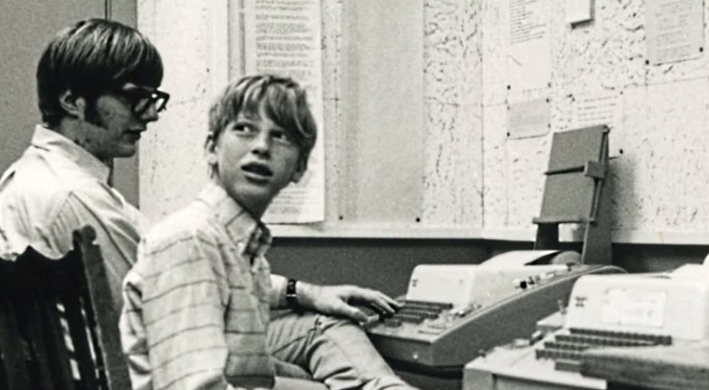

Bill Gates nació en una familia acomodada de Seattle. Su padre, William H. Gates Sr., era un destacado abogado, y su madre, Mary Maxwell Gates, era profesora universitaria y directiva de varias empresas importantes.
En 1968, cuando tenía 13 años, la escuela Lakeside compró una terminal de computadora Teletype Model 33 ASR. Gates inmediatamente se sintió fascinado y pasaba todo su tiempo libre programando.
A los 15 años, Gates y Allen fundaron su primera empresa llamada "Traf-O-Data", que analizaba datos de tráfico vehicular. Aunque no fue muy exitosa, les dio experiencia valiosa.
En 1973, Gates ingresó a la Universidad de Harvard con la intención de estudiar derecho. Sin embargo, su pasión por las computadoras era más fuerte.
Bill Gates durante sus años universitarios
Proyecto escolar - Preparatoria - Asignatura: Informática